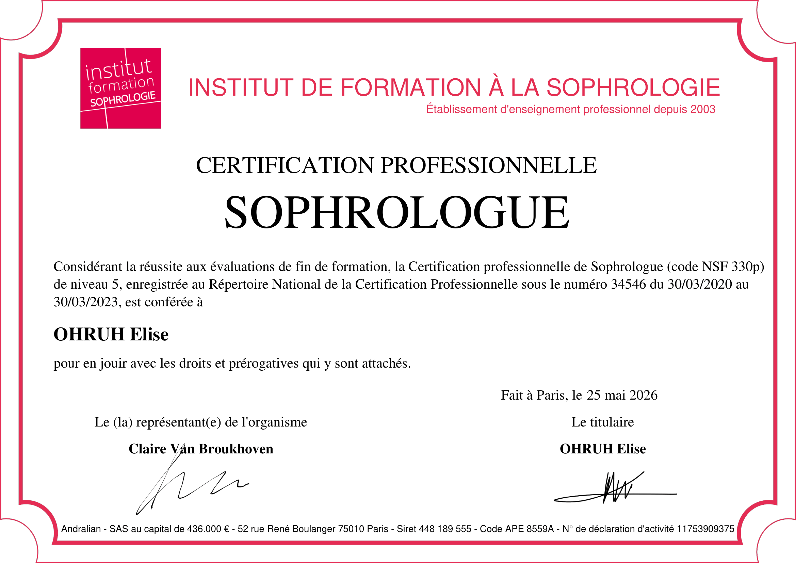

Sophrologue • Surbourg
Retrouver calme et équilibre.
Je vous accompagne avec douceur et bienveillance dans la gestion du stress, des émotions, du sommeil et lors des différentes étapes de votre vie.
Prendre rendez-vousSophrologue • Surbourg
Je vous accompagne avec douceur et bienveillance dans la gestion du stress, des émotions, du sommeil et lors des différentes étapes de votre vie.
Prendre rendez-vous
Qui suis-je ?
J'ai travaillé pendant 10 ans dans le domaine de l'accompagnement en tant qu'auxiliaire de vie. Passionnée par l'humain et le bien-être, j'accompagne aujourd'hui les enfants, les adolescents et les adultes dans leur recherche d'équilibre et de sérénité.
La sophrologie permet de retrouver un équilibre entre le corps et l'esprit. Chaque séance est adaptée à votre rythme, à vos besoins et à votre histoire.
Mon objectif est de vous offrir un espace d'écoute et de bienveillance dans lequel vous pourrez avancer à votre rythme et en toute confiance.
Accompagnements
Tarifs
Certification
Certifiée Sophrologue par l’Institut de Formation à la Sophrologie, certification professionnelle enregistrée au Répertoire National de la Certification Professionnelle.

Horaires
Consultations sur rendez-vous uniquement. Dernier rendez-vous possible à 16h30.
Contact
📍 27 B rue de la paix – 67250 Surbourg